图解发展路线：
从 MPS 到 TTN / MERA / PEPS
本页图片均为论文 TeX 源码中提取的原始插图（arXiv e-print），每图注明出处。按「χ 撞墙后的逃生梯」组织：一维链（MPS/uMPS）→ 压缩应用（MPO）→ 层级结构（TTN/MERA 去纠缠器）→ 数据侧证据（文本互信息体积律）；F–K 节为从物理综述提取的详细结构图（腿的指标、收缩规则、读取规则）。
均匀 MPS 的收缩代数
uMPS 的序列概率通过沿链收缩核张量 A 得到；图中 (d)–(f) 给出从转移矩阵到配分函数 Zn 的收缩规则——这是一切「MPS 作语言模型」工作的机械基础。
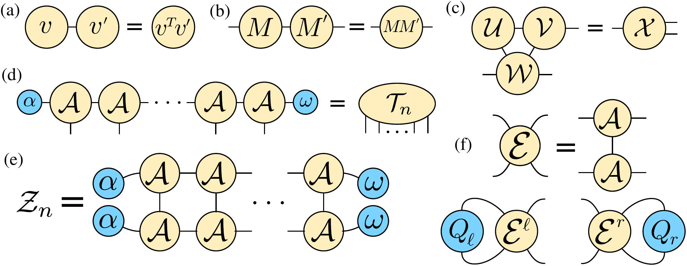
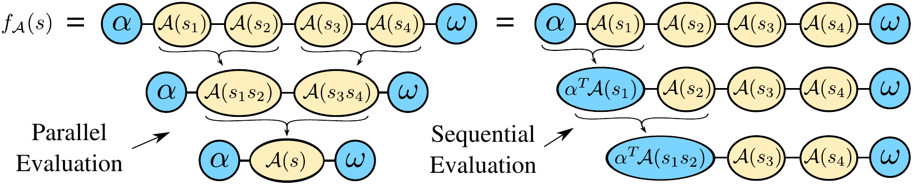
文本互信息的体积律（I(L) ~ L^0.82）
MINE 与 kNN 两种估计器在 WikiText-2 上独立给出互信息随子区域长度的幂律增长（图 b2 的对数坐标拟合），而 MPS 任意切面只能携带 log₂χ 比特——这是「一维张量网络无法高效描述文本」的原始证据，也是 χ*(W) 标度律选题的理论地基。
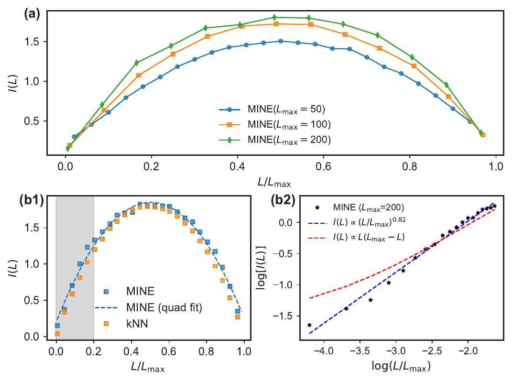
MPO 重写 LLM 权重（CompactifAI）
(a) 权重矩阵 W 经 reshape 为高阶张量后以逐次 SVD 截断为 MPO（键维 χ 控制压缩率）；(b) LLaMA decoder block 中 SA 与 MLP 层被 MPO 替换的整体结构。注意：此 χ 约束的是权重相关结构，不是历史状态维度——两条路线在此分岔。
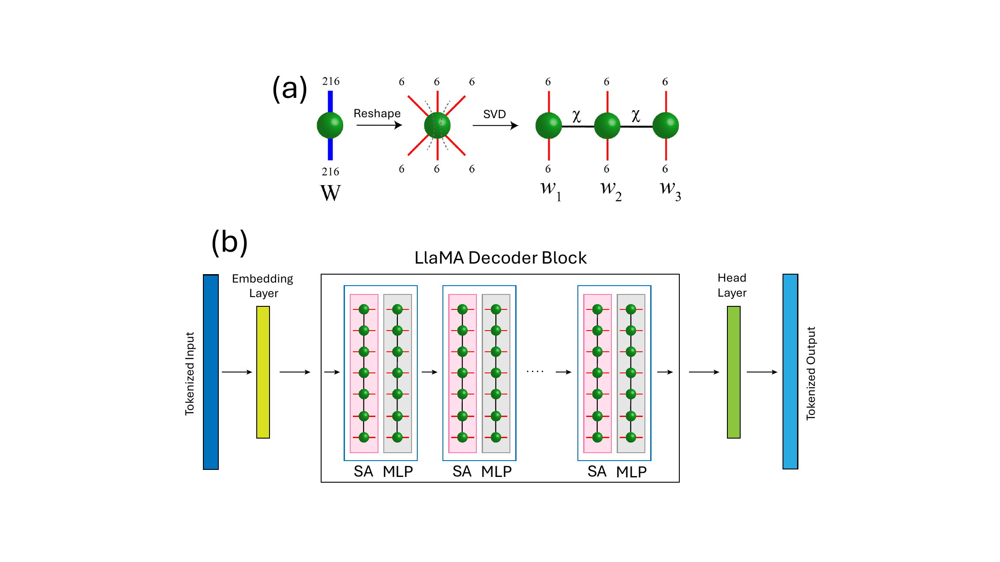
TTN 与 MERA 式去纠缠器
树张量网络把链换成无环树：叶子挂物理指标，内部节点逐层粗粒化，收缩仍精确且多项式。对层级关联数据，MPS 需指数 χ 的任务 TTN 只需多项式 χ——这是「MPS 撞墙后的下一篇」的候选结构。
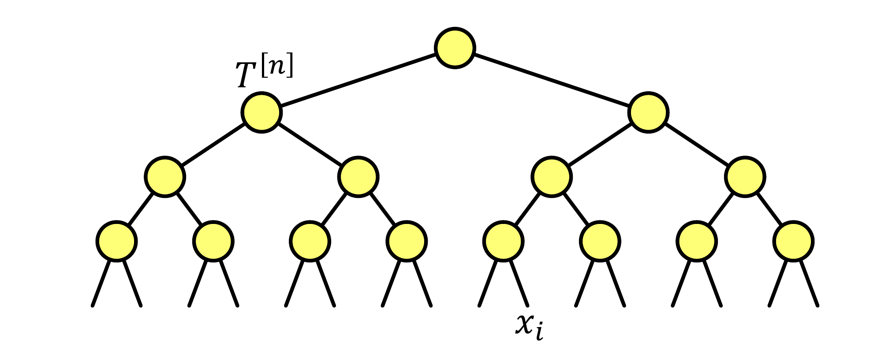
MERA 的思想——在粗粒化前用局域酉门（disentangler）先去纠缠——在量子 LLM 工作中被直接借用：把 MPO 中的纠缠转移到变分量子线路后，残余 MPO 可压至 χ=1。下图是其实证：去纠缠精度与纠缠熵随「去纠缠器 χ」的扫描曲线。
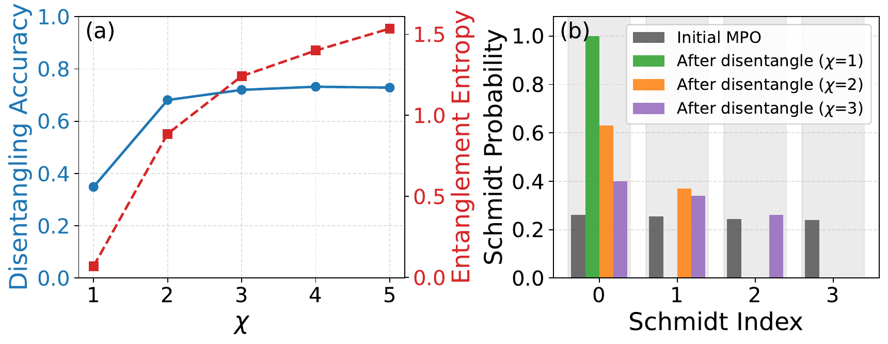
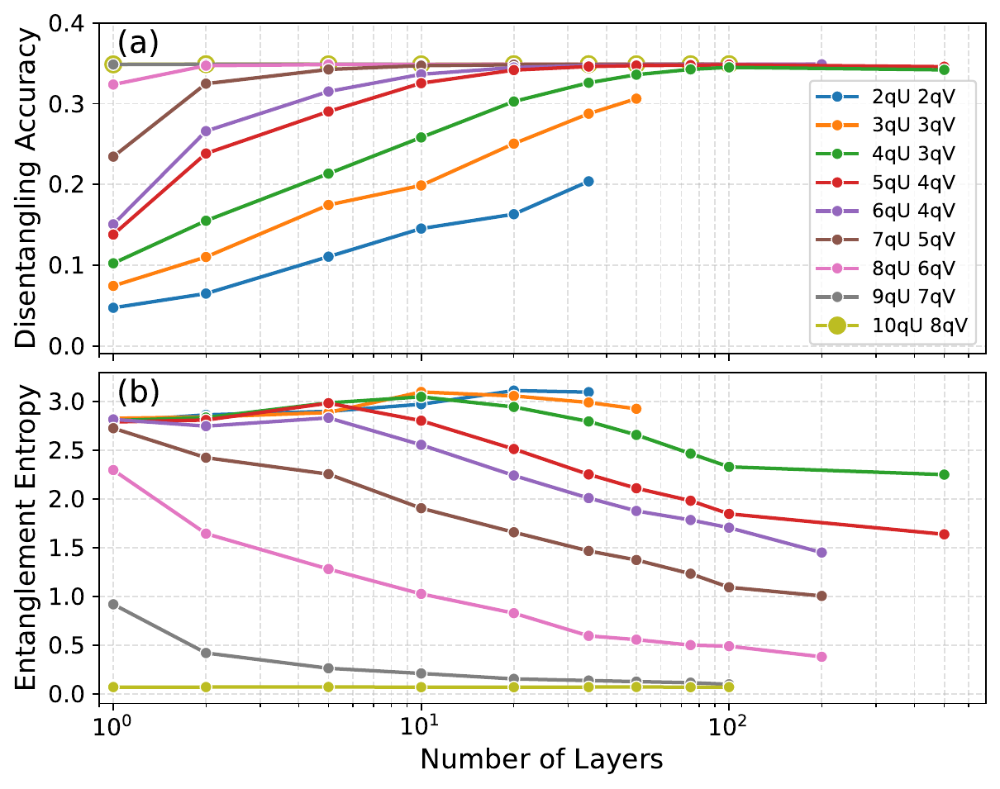
每条腿 = 一个指标，每条连线 = 一次求和
张量网络图解的通用规则：标量无腿、向量一腿、矩阵两腿、三阶张量三腿；两个张量之间的连线表示对共享指标求和（收缩）。后面所有结构图都遵循这套记号。
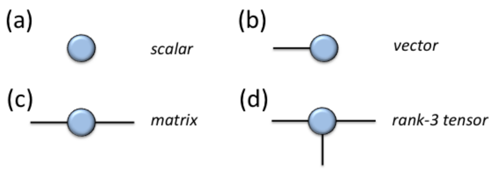
MPS：每条腿的维数与转移矩阵读取规则
MPS 核 Γ 有三条腿：左/右键指标（维数 χ，即 bond dimension）与物理腿（维数 d，对语言模型即词表大小）。读取规则：所有观测量归结为「转移矩阵」E——把 A 与其复共轭沿物理腿收缩得到的 χ² 维矩阵；两点关联函数衰减由 E 的次大本征值决定，关联长度 ξ = −1/ln|λ₂/λ₁|（这正是 §3.6 选题中提议在训练好的文本模型上实测的量）。
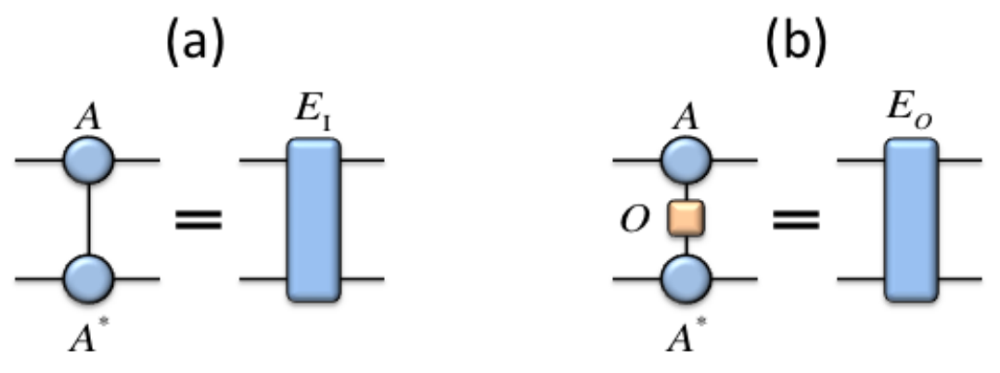
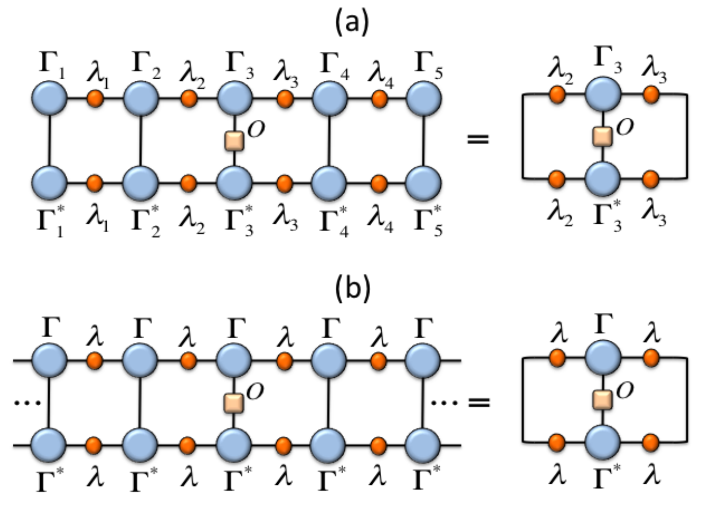
TEBD 的三种门作用模式
时间演化算符 U(δτ) 经 Trotter 分解为两体门后，可按 (a) 并行、(b) 顺序、(c) MPO 三种方式作用到 MPS 上；每步 = 两站点合并 → 门作用 → SVD 按 χ 截断。机器学习中 MPS 分类器的 DMRG 式扫描训练与此同构。
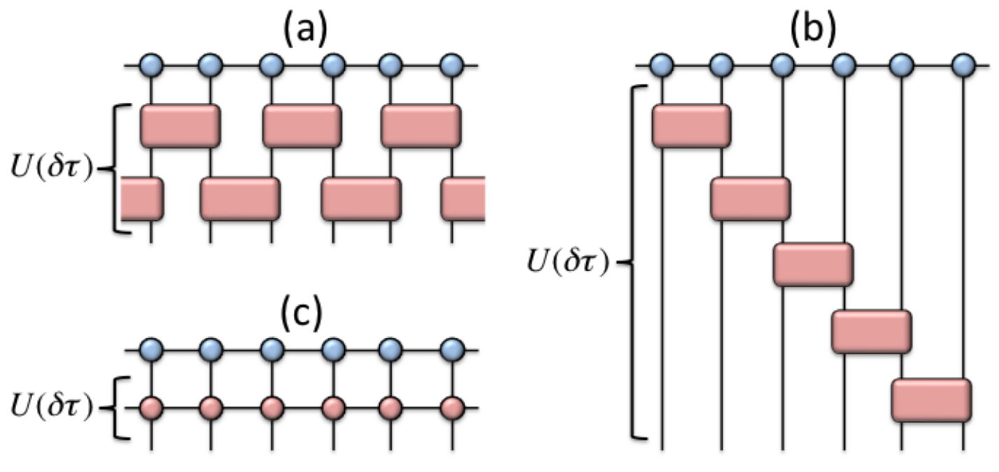
树张量网络：无环 ⇒ 精确收缩
TTN（结构图见上方 D 节）把链换成无环二叉树：叶子挂物理指标 i₁…iₙ，内部三阶张量逐层合并，根张量输出标量（概率/振幅）。收缩规则：从叶子向根动态规划，每层并行，深度 O(log n)，总成本多项式。读取规则：任意张量的「环境」由树的唯一路径决定，规范形与 DMRG 式训练都逐字沿用 MPS 版本——这是 TTN 相对 PEPS 最大的工程优势，也是「文本 TTN-LM 空白」值得填的原因。
二元 MERA 的分层结构
MERA = TTN + 每层粗粒化前插入 disentangler u（两进两出的酉门，绿色方块）先去纠缠，再由 isometry w（三腿等距张量，红色三角，两腿进一腿出）把两个格点并成一个。深度 ~log N；顶端 top tensor 输出最终标量。
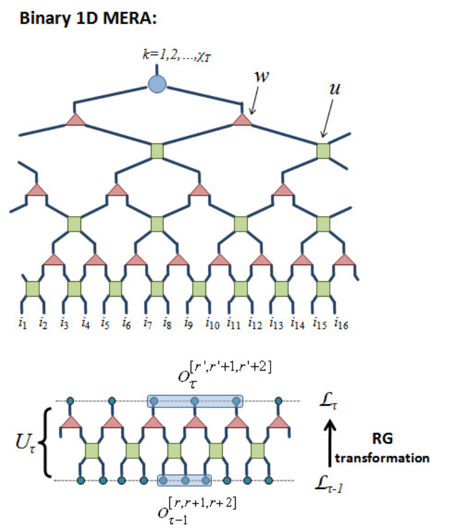
约束条件：isometry 与酉性的图解
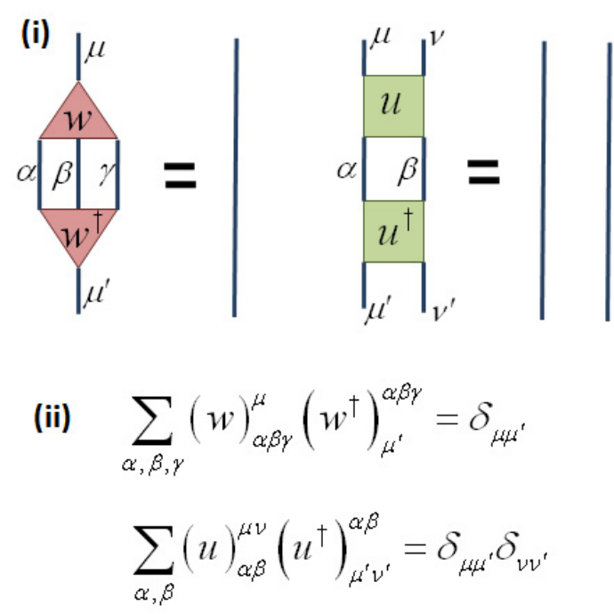
因果锥：为什么读取只要 O(log N) 个张量
读取规则：计算局域观测量时，由于 w†w=I 与 u†u=I⊗I，因果锥之外的所有张量与其共轭成对消去——只剩锥内 O(log N) 个张量需要收缩。这就是 MERA 既能表达 S~log ℓ（临界系统）又保持计算可行的原因。
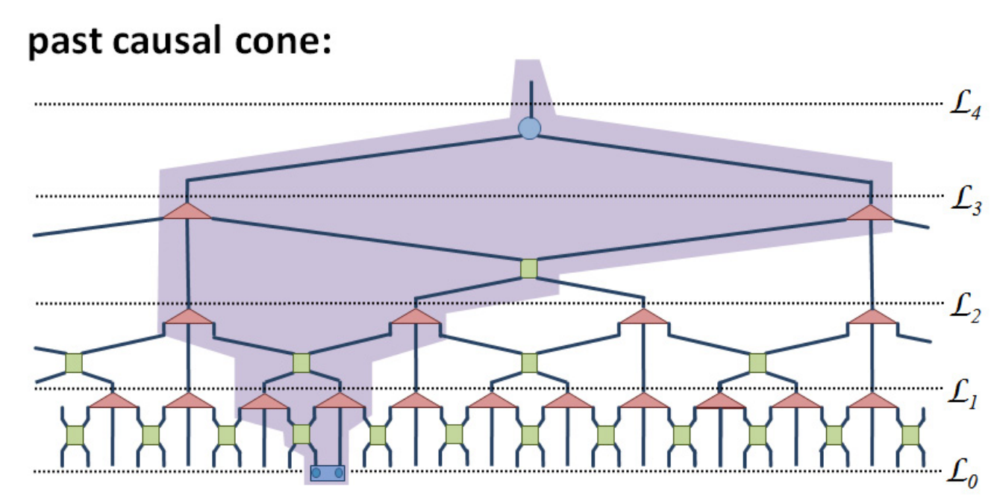
PEPS：每点五腿，收缩 #P-hard
PEPS 每个格点的张量有五条腿：上下左右四条键（各维 χ）加一条物理腿（维 d）。二维面积律纠缠由此而来，代价是精确收缩 #P-hard。
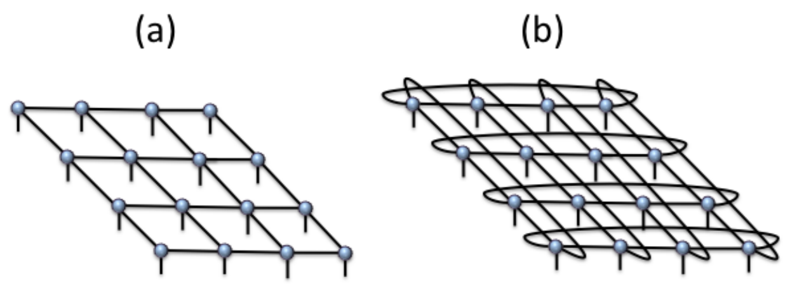
读取规则：双张量网络 + boundary MPS
观测量 ⟨ψ|O|ψ⟩ 先把每个格点的 ket/bra 张量沿物理腿收缩成双张量（粗线 = 维 χ² 的"双指标"），得到一张二维网格；再用 boundary MPS 方法逐行压缩：把上一行环境近似为一个 MPS（键维记 D），与新一行（MPO）收缩后重新截断。KARIPAP 用 TRG 替代这一步收缩 LLM 权重。
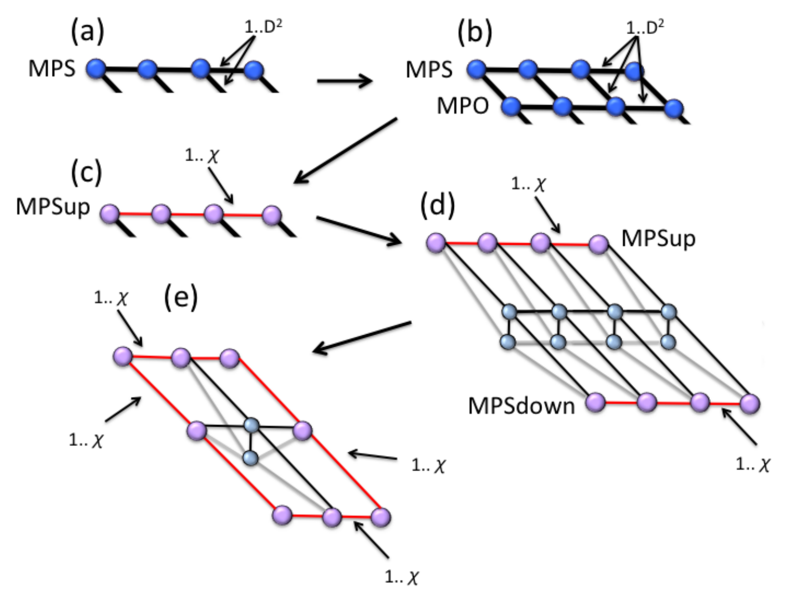
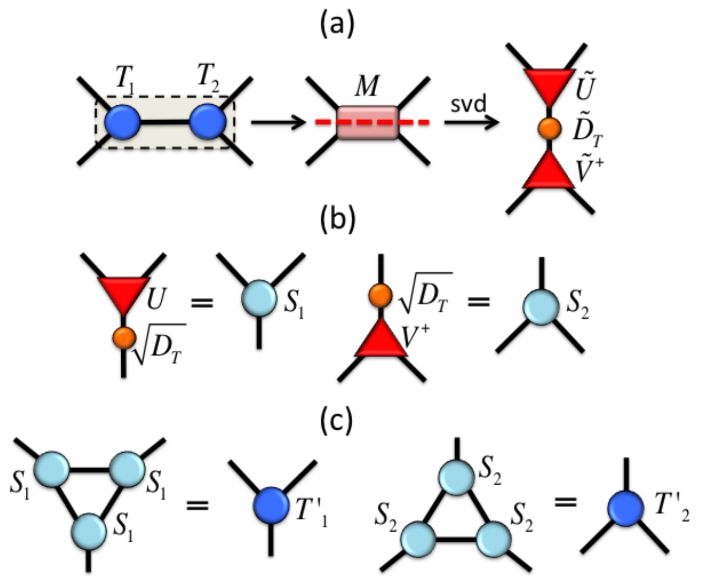
χ 的逃生梯
| 结构 | 纠缠容量 | 收缩 | 在课题中的位置 |
|---|---|---|---|
| MPS / uMPS | S ≤ log₂χ（常数） | 精确 | 主仪器：χ = 状态维度 |
| TTN | 层级关联多项式 χ | 精确（无环树） | 撞墙后的下一篇（文本 TTN-LM 空白） |
| MERA | S ~ log ℓ（临界） | 精确（因果锥） | 匹配幂律标度的候选；disentangler 已被量子 LLM 借用 |
| PEPS / iPEPS | 面积律（2D） | 近似（#P-hard） | KARIPAP 压缩路线；文本证据薄弱 |
TEBD 不属于此梯——它是 MPS 上的时间演化算法（局域门 + SVD 截断），机器学习中的对应物是 DMRG 式扫描训练；本课题采用 SGD on contractions 路线（文献中无人用 DMRG 库训文本）。